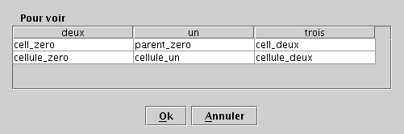

|
||||||||||
| PREV PACKAGE NEXT PACKAGE | FRAMES NO FRAMES | |||||||||
See:
Description
| Class Summary | |
| ActionAddEnregistrement | Action to add an Enregistrement to a Table. |
| ActionAddEnregistrementBasic | Action to add an Enregistrement to the basicTable of BDD. |
| ActionAddEnregistrementParent | Action to add an Enregistrement to the parentTable of BDD. |
| ActionDebugEnregistrement | Action to debug an Enregistrement from a Table by calling toString(). |
| ActionDeleteEnregistrement | Action to delete an Enregistrement from a Table. |
| ActionDeleteView | Action that delete a View from the JBaseDeDonnees. |
| ActionEditEnregistrement | Action to edit an Enregistrement from a Table. |
| ActionGeneric | ActionGeneric that can be done on any Element. |
| ActionLoad | ActionLoad that loads a DataBase. |
| ActionPrint | ActionPrint that write a database on file|screen... |
| Actions | Actions that can be done on the BDD. |
| ActionSave | ActionSave that saves the whole DataBase. |
| ActionSearchTable | Action that pops-up a DialogSearch and eventually search a Table. |
| ChangeListenerBDD | listen for change in the table selected in the BDD. |
| DialogCheckEnregistrement | DialogCheckEnregistrement will display the Enregistrement and those which are close to it and ask for confirmation. |
| DialogEditEnregistrement | For a given enregistrement, can display/edit parentEnregistrement and value for each field. |
| DialogGetEnregistrement | DialogGetEnregistrement will display a Table and ask the user to select an Enregistrement. |
| DialogPrint | Ask for various print options. |
| DialogSearch | DialogSearch will ask to fill in a JSearchOperator for a given Table. |
| MenuBarBDD | A MenuBar for the BDD. |
| MouseListenerBDD | listen for Mouse event, normally on a BDD. |
| PopupMenuBDD | A PopUpMenu for the BDD. |
| SelectionListenerBDD | listen Selection events, normally on the Table of a BDD. |
| Utils | Various Utilities that might be needed |
Reflechir aux actions.
Action ( ActionEvent e ) est tres generic, c'est pas facile de savoir
d'où ca vient... Quoique. Et il faut les associer a des Component. Les
Components peuvent-ils etre traversables aux actions?
Faire un DialogEditEnregistrement qui permet de choisir/afficher le parent et aussi de modifier les champs.
Un DialogGetEnregistrement could directly use a JTableData without having
to build its own... Presently, it builds its own.
Pas joli, mais pour rechercher le parent d'un enregistrement, on passera
par un DialogGetEnregistrement (alors qu'on peut aussi passer par un combo
box). Avantages des options
DialogGetEnregistrement : 
|
||||||||||
| PREV PACKAGE NEXT PACKAGE | FRAMES NO FRAMES | |||||||||